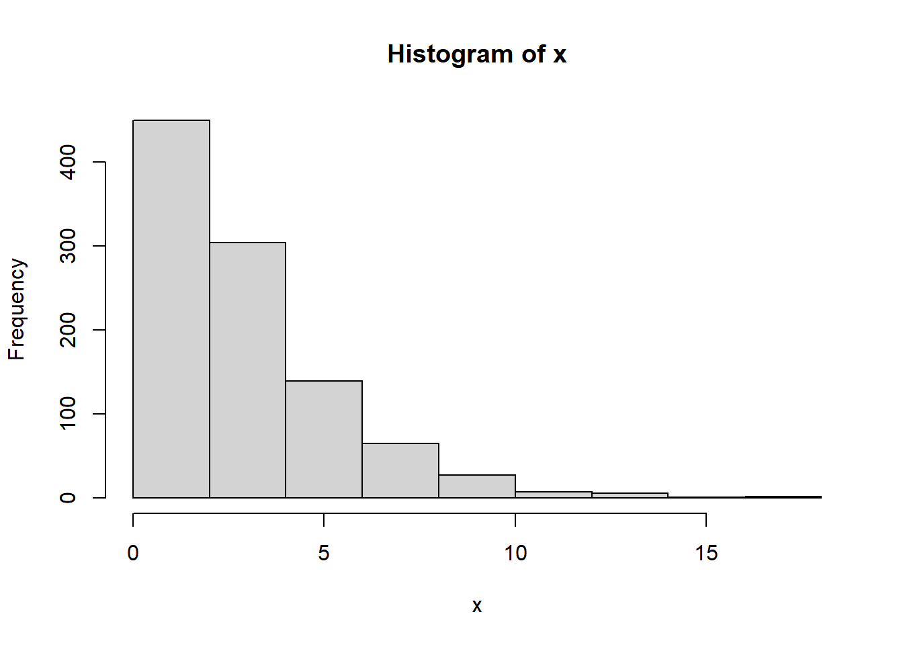

Chapter 1 Introducción a R
R es un software de libre distribución
1.1 Tipos de estructuras
- Vectores
- Matrices
- Arrays
- Dataframes
- Listas
## [1] "1" "2" "3" "4" "5" "6" "7" "8" "9" "10"## [1] 1 2 3 4 5 6 7 8 9 10## [1] NaN## NULL## num 1## [1] "double"## [1] "character"## [1] 0 0 2 2 0 2 0 1 0 2## [1] 16.2159188 -18.6083609 6.0834615 -1.7631812
## [5] -0.9227368 3.3314678 8.0399628 -1.2737827
## [9] 3.0561443 20.6370249## [1] 426.0414 160.5510 452.7618 358.3433 384.1404 364.4532
## [7] 233.7266 271.8690 306.0805 321.0706## [1] 4.3933326 8.2862359 1.5168240 5.3714336 0.6903808
## [6] 0.2386174 1.7472339 0.4489477 1.5205970 2.0642341## [1] 0.03631258 0.18407083 0.10506859 0.06058757 0.20314425
## [6] 0.02951190 0.05686093 0.24776687 0.29229976 0.14715743
## [1] 8.411754## [1] 0.2303357## 2% 56%
## 0.1698648 2.7149793## 1% 2% 3% 4% 5%
## 0.1308249 0.1698648 0.2011679 0.2719926 0.3273232
## 6% 7% 8% 9% 10%
## 0.3657637 0.4142473 0.4772539 0.5088622 0.5518074
## 11% 12% 13% 14% 15%
## 0.6017816 0.6339451 0.6611159 0.7140674 0.7397907
## 16% 17% 18% 19% 20%
## 0.7708215 0.8035009 0.8378089 0.8898579 0.9337996
## 21% 22% 23% 24% 25%
## 0.9993748 1.0400883 1.0770378 1.0997817 1.1649931
## 26% 27% 28% 29% 30%
## 1.2021143 1.2446016 1.3028262 1.3454966 1.3835452
## 31% 32% 33% 34% 35%
## 1.4258834 1.4754780 1.5213684 1.5729425 1.6203325
## 36% 37% 38% 39% 40%
## 1.6576769 1.7247227 1.7610288 1.8184692 1.8806377
## 41% 42% 43% 44% 45%
## 1.9131073 1.9467979 2.0362504 2.0752878 2.1311587
## 46% 47% 48% 49% 50%
## 2.1705347 2.2171641 2.2709413 2.3333099 2.3668918
## 51% 52% 53% 54% 55%
## 2.4186515 2.4609699 2.5013141 2.5983512 2.6560530
## 56% 57% 58% 59% 60%
## 2.7149793 2.7713411 2.8197823 2.8762648 2.9373813
## 61% 62% 63% 64% 65%
## 3.0069044 3.0505838 3.1052682 3.1586362 3.2018234
## 66% 67% 68% 69% 70%
## 3.2416893 3.3197594 3.4228659 3.4796816 3.5419605
## 71% 72% 73% 74% 75%
## 3.6014545 3.7314014 3.8332721 3.9092714 4.0132410
## 76% 77% 78% 79% 80%
## 4.0920801 4.1411076 4.3012611 4.3800683 4.4706918
## 81% 82% 83% 84% 85%
## 4.5407029 4.7517895 4.9125217 5.0314002 5.1659162
## 86% 87% 88% 89% 90%
## 5.2499614 5.4573476 5.6594409 5.9776510 6.3537226
## 91% 92% 93% 94% 95%
## 6.5258010 6.9721910 7.2670465 7.7219239 8.0642907
## 96% 97% 98% 99% 100%
## 8.5748615 9.0295488 10.0678281 11.3840660 20.2911294## [1] 2.791799e-37## [1] 0## eigen() decomposition
## $values
## [1] 2.864414e+03 5.585784e+00 -3.006427e-14 -5.964175e-14
## [5] -1.744794e-13
##
## $vectors
## [,1] [,2] [,3] [,4]
## [1,] -0.09654784 0.76855612 0.00000000 0.00000000
## [2,] -0.24551564 0.48961420 0.08358281 0.54130760
## [3,] -0.39448345 0.21067228 0.29202311 -0.78404241
## [4,] -0.54345125 -0.06826963 -0.83479466 -0.05583796
## [5,] -0.69241905 -0.34721155 0.45918874 0.29857278
## [,5]
## [1,] 6.324555e-01
## [2,] -6.324555e-01
## [3,] -3.162278e-01
## [4,] 1.609823e-15
## [5,] 3.162278e-01## [1] 5 5## [1] "a"## [1] "2"## [1] 0.1 0.2 0.3 0.4 0.5 0.6 0.7 0.8 0.9 1.0 1.1 1.2 1.3 1.4
## [15] 1.5 1.6 1.7 1.8 1.9 2.0## [1] 0.3 1.9## [1] 0.6 0.7 0.8 0.9 1.0 1.1 1.2 1.3 1.4 1.5 1.6 1.7 1.8 1.9
## [15] 2.0## [1] 1## [1] 0.1 0.2 0.3 0.4 0.5 0.6 0.7 0.8 1.0 1.1 1.2 1.3 1.4 1.5
## [15] 1.6 1.7 1.8 1.9 2.0## [1] 0.6 0.7 0.8 0.9## [1] 0.1 0.2 0.3 0.4 0.5 0.6 0.7 0.8 0.9 1.0 1.1 1.2 1.3 1.4
## [15] 1.5 1.6 1.7 1.8 1.9 2.0## [,1] [,2] [,3] [,4] [,5]
## [1,] 1 5 9 13 17
## [2,] 2 6 10 14 18
## [3,] 3 7 11 15 19
## [4,] 4 8 12 16 20## [1] 1 5 9 13 17## [1] 1 2 3 4## [1] 3## [,1] [,2] [,3] [,4] [,5]
## [1,] 1 5 9 13 17
## [2,] 4 8 12 16 20## [,1] [,2]
## [1,] 5 13
## [2,] 6 14
## [3,] 7 15
## [4,] 8 16## [,1] [,2]
## [1,] 5 13
## [2,] 8 16## [1] FALSE FALSE TRUE TRUE## [,1] [,2] [,3] [,4] [,5]
## [1,] 3 7 11 15 19
## [2,] 4 8 12 16 20## [1] 10.5## V1 V2 V3 V4 V5
## 1 1 5 9 13 17
## 2 2 6 10 14 18
## 3 3 7 11 15 19
## 4 4 8 12 16 20## 'data.frame': 4 obs. of 5 variables:
## $ V1: int 1 2 3 4
## $ V2: int 5 6 7 8
## $ V3: int 9 10 11 12
## $ V4: int 13 14 15 16
## $ V5: int 17 18 19 20## [1] 2.5## V1 V2 V3 V4 V5
## 2.5 6.5 10.5 14.5 18.5## V1 V2 V3
## Min. :1.00 Min. :5.00 Min. : 9.00
## 1st Qu.:1.75 1st Qu.:5.75 1st Qu.: 9.75
## Median :2.50 Median :6.50 Median :10.50
## Mean :2.50 Mean :6.50 Mean :10.50
## 3rd Qu.:3.25 3rd Qu.:7.25 3rd Qu.:11.25
## Max. :4.00 Max. :8.00 Max. :12.00
## V4 V5
## Min. :13.00 Min. :17.00
## 1st Qu.:13.75 1st Qu.:17.75
## Median :14.50 Median :18.50
## Mean :14.50 Mean :18.50
## 3rd Qu.:15.25 3rd Qu.:19.25
## Max. :16.00 Max. :20.00## V1 V2 V3 V4 V5
## V1 1.666667 1.666667 1.666667 1.666667 1.666667
## V2 1.666667 1.666667 1.666667 1.666667 1.666667
## V3 1.666667 1.666667 1.666667 1.666667 1.666667
## V4 1.666667 1.666667 1.666667 1.666667 1.666667
## V5 1.666667 1.666667 1.666667 1.666667 1.666667## V1 V2 V3 V4 V5
## V1 1 1 1 1 1
## V2 1 1 1 1 1
## V3 1 1 1 1 1
## V4 1 1 1 1 1
## V5 1 1 1 1 1## V1 V2 V3 V4 V5
## 1 1 5 9 13 17
## 2 2 6 10 14 18
## 3 3 7 11 15 19
## 4 4 8 12 16 201.2 Loops y condiciones
rm(list = ls())
x<-5
## if
if(x>6){
hist(rnorm(100,3,2))
}
## if else
if(x>6){
hist(rnorm(100,3,2))
} else {
boxplot(rnorm(100,3,2))
}
## if encadenado
x<-60
if(x>6){
hist(rnorm(100,3,2))
mean(x)
} else if(x<6){
boxplot(rnorm(100,3,2))
} else if(typeof(x)=="double"){
print("hola")
} else {
print("hola hola")
}
##for
for(i in 1:100){
print(i)
}
for(i in c(2,7,9,15,19)){
print(i)
}
for(i in c("a","b","c")){
print(i)
}
for(i in 1:5){
for(j in 6:10){
print(i*j)
}
}
for(i in 1:5){
for(j in 6:10){
aux<-i*j
print(aux)
if(aux==20){
break()
print("hola")
boxplot(rnorm(100,i,j))
}
}
}
#while
z<-1
k<-1
while(z>0.0001){
print(k)
z<-1/k
k<-k+1
}1.3 Funciones
fx<-function(x){
y<-8*x**2
return(y)
}
fx(5)
fx(1:10)
curve(fx,xlim = c(-20,20),ylim=c(0,1000))
plot(fx)
##comando de estadisticas de tendencia central
tendencia<-function(x){
n<-length(x)
cat("media:",fill = T)
print(sum(x)/n)
cat("mediana:",fill = T)
x<-sort(x)
if(n%%2==0){
me<-(x[n/2]+x[n/2+1])/2
} else {
me<-x[ceiling(n/2)]
}
print(me)
cat("moda:",fill = T)
tt<-table(x)
mm<-max(tt)
print(names(tt)[(table(x)==mm)])
cat("media cuadrática:",fill = T)
mc<-sqrt(sum(x**2)/n)
print(mc)
cat("media armónica",fill = T)
ma<-n/sum(1/x)
print(ma)
cat("media geométrica:",fill = T)
mg<-prod(x)**(1/n)
print(mg)
}
xx<-scan()
a<-tendencia(xx)
tendencia2<-function(x){
n<-length(x)
media<-sum(x)/n
x<-sort(x)
if(n%%2==0){
me<-(x[n/2]+x[n/2+1])/2
} else {
me<-x[ceiling(n/2)]
}
tt<-table(x)
mm<-max(tt)
mo<-names(tt)[(table(x)==mm)]
mc<-sqrt(sum(x**2)/n)
ma<-n/sum(1/x)
mg<-prod(x)**(1/n)
aux<-list(media,me,mo,mc,ma,mg)
return(aux)
}
a<-tendencia2(xx)
tendenciaF<-function(x,f){
n<-sum(f)
media<-sum(x*f)/n
}1.4 Importacion de datos
#importando bases de datos
getwd()
setwd("C:\\Users\\PC18\\Documents\\R\\est383\\data\\eh18\\SPSS")
dir()
##SPSS
## activar o instalar librerias
library(foreign)
eh18d<-read.spss("EH2018_Discriminacion.sav",
to.data.frame = T,use.value.labels=F)
names(eh18d)
table(eh18d$s10a_01a)
attributes(eh18d)$variable.labels[5]
head(eh18d)
##CSV
setwd("C:\\Users\\PC18\\Documents\\R\\est383\\data\\eh18\\CSV")
dir()
eh18d2<-read.csv2("EH2018_Discriminacion.csv")
aux<-read.csv("EH2018_Discriminacion.csv",sep=";")
table(eh18d2$s10a_01a)
daux<-c("Sexo","O. Sexual","Edad","piel","Pertenencia",
"idioma","vestimente","procedencia","discapacidad",
"religion","clase","otro")
for(i in 5:16){
barplot(prop.table(table(eh18d2[,i]))*100,main=daux[i-4])
}1.5 Dataframe y exploración
rm(list=ls())
setwd("C:\\Users\\PC18\\Documents\\R\\est383\\data\\eh18\\SPSS")
library(foreign)
dir()
eh18<-read.spss("EH2018_Persona.sav",
to.data.frame = T,use.value.labels=F)
#################################################
names(eh18)#nombres de las variable
str(eh18)
class(eh18)
##renombrando variables
names(eh18)[c(5,6)]<-c("sexo","edad")
names(eh18)
##crear variable (mujer 1=mujer, 0 eoc)
eh18$mujer<-eh18$sexo==2
sum(eh18$mujer)
mean(eh18$mujer)
#exportación ("write")
write.dta(eh18,"eh18p.dta")
getwd()
#excel
library(readxl)
install.packages("writexl")
library(writexl)
library(help=writexl)
write_xlsx(eh18,"eh18p.xlsx")
apropos("read")
apropos("write")
install.packages("haven")
library(haven)
eh18$s03a_02e<-substr(as.character(eh18$s03a_02e),1,120)
eh18$s03a_02e<-gsub(" "," ",as.character(eh18$s03a_02e))
gsub("a","7","hola")
gsub("`","'","`s04a_04e`, `s04a_07ge`, `s04b_15e`, `s04b_16e`, `s04b_17e`, `s04b_18e`, `s04e_30c`, `s04f_35e`, `s05a_04`, `s05c_13_e`, `s05d_21e`, `s05d_22_e`, `s06a_06e`, `s06a_09e`, `s06a_10e`, `s06b_11a`, `s06b_11b`, `s06b_12a`, `s06b_12b`, `s06b_13`, `s06b_20e`, `s06e_34e`, `s06f_40a`, `s06f_40b`, `s06h_54e`, `s06h_55e`, `s06h_56e`, `s07a_01e1e`, `s07a_01e2e`, `s07a_02ce`, `s07b_05de`, `s07b_05ee`, `s07c_08e`, `s07c_09e`")
nchar(eh18$s03a_02e)
vv<-c('s04a_04e', 's04a_07ge', 's04b_15e', 's04b_16e', 's04b_17e', 's04b_18e', 's04e_30c', 's04f_35e', 's05a_04', 's05c_13_e', 's05d_21e', 's05d_22_e', 's06a_06e', 's06a_09e', 's06a_10e', 's06b_11a', 's06b_11b', 's06b_12a', 's06b_12b', 's06b_13', 's06b_20e', 's06e_34e', 's06f_40a', 's06f_40b', 's06h_54e', 's06h_55e', 's06h_56e', 's07a_01e1e', 's07a_01e2e', 's07a_02ce', 's07b_05de', 's07b_05ee', 's07c_08e', 's07c_09e')
for(i in vv){
eh18[,i]<-gsub(" "," ",as.character(eh18[,i]))
eh18[,i]<-substr(eh18[,i],1,120)
}
write_sav(eh18,"eh18p.sav")
save(eh18,vv,file="eh18p.RData")
rm(list=ls())
getwd()
load("eh18p.RData")
set.seed(123456)####semilla
a<-matrix(rnorm(20),5,4)
apply(a, 1, sum)
apply(a, 2, mean)
apply(a, 1, sd)
mc<-function(x){
n<-length(x)
aux<-sqrt(sum(x^2)/n)
return(aux)
}
apply(a, 1, mc)
apply(a, 2, mc)
tapply(eh18$mujer,eh18$depto,mean)
tapply(eh18$mujer,list(eh18$depto,eh18$area),mean)
tapply(eh18$edad,list(eh18$depto,eh18$area),mean)
tapply(eh18$edad>60,list(eh18$depto,eh18$area),mean)
tapply(eh18$edad<5,list(eh18$depto,eh18$area),mean)
tapply(eh18$p0,list(eh18$depto,eh18$area),mean,na.rm=T)
aux<-tapply(eh18$p0,list(eh18$depto,eh18$area,eh18$niv_ed_g),mean,na.rm=T)
as.data.frame(aux)
lapply()
mapply()
sapply()1.6 Estadística descriptiva
#Estadística descriptiva
rm(list=ls())
setwd("C:\\Users\\PC18\\Documents\\R\\est383\\data\\eh18\\SPSS")
#encuesta a hogares 2018
load("eh18p.RData")
data()#muestra las bases de datos disponibles en R
ChickWeight
View(ChickWeight)
help("ChickWeight")
##Porcentajes y tablas de fracuencias
t1<-table(eh18$sexo)#tabla de frcuencias
t2<-table(eh18$depto)
t3<-table(eh18$edad)
barplot(t1,col=c("blue","darkgreen"))#diagramas de barra
barplot(t3,horiz = T)
barplot(t3,col="red")
ldep<-c("CH","LP","CB","OR","PT","TJ","SC","BN","PD")
barplot(t2,col="black",names.arg = ldep)
#llevando a %
t2p<-prop.table(t2)*100
barplot(t2p,col="black",names.arg = ldep,ylab="%")
pie(t2p)
t3<-as.data.frame(t3)
t3$F<-cumsum(t3$Freq)
t3$r<-prop.table(t3$Freq)
t3$R<-cumsum(t3$r)
head(t3)
table(ChickWeight$Time)
table(ChickWeight$Diet)
dim(table(ChickWeight$Chick))
#tabla de contingencia
aux<-table(ChickWeight$Chick,ChickWeight$Diet)
aux[aux!=0]<-1
apply(aux,2,sum)
table(ChickWeight$Time)
table(ChickWeight$Diet[ChickWeight$Time==0])
##medidas de tendencia central
mean(eh18$edad)
median(eh18$edad)
mean(eh18$ylab,na.rm = T)
median(eh18$ylab,na.rm = T)
hist(eh18$ylab)
plot(density(eh18$ylab,na.rm = T))
locator(1)
summary(eh18$ylab)
#medidas de dispersion
var(eh18$ylab,na.rm = T)
sd(eh18$ylab,na.rm = T)
max(eh18$ylab,na.rm = T)-min(eh18$ylab,na.rm = T)
sd(eh18$ylab,na.rm = T)/mean(eh18$ylab,na.rm = T)
#medidas de forma
quantile(eh18$ylab,c(0.1,0.44,0.99),na.rm=T)
hist(eh18$edad)
#Coeficiente de asimetría
#EDAD
x<-eh18$edad
N<-length(x)
as<-(sum((x-mean(x))^3)/N)/sd(x)^3
as
#iNGRESO LABORAL
x<-eh18$ylab
x<-x[is.na(x)==F]
x<-x[complete.cases(x)]
N<-length(x)
as<-(sum((x-mean(x))^3)/N)/sd(x)^3
as
#kurtosis...
plot(density(rnorm(1000,sd=40)),ylim=c(0,0.08))
points(density(rnorm(1000,sd=10)),type="l",col="red")
points(density(rnorm(1000,sd=5)),type = "l",col="blue")
lm(ylab~edad,data=eh18,weights = f)
lm(ylab~-1+edad,data=eh18)
summary(lm(ylab~edad,data=eh18))1.7 Muestreo e inferencia
rm(list=ls())
N<-15;n<-6
choose(N,n)
set.seed(123)
y1<-rnorm(N,10,5)
set.seed(234)
y2<-rexp(N,3)
set.seed(345)
y3<-runif(N,500,3000)
#par?metros
theta1<-mean(y1)
theta2<-sum(y2)
# sum(y3>1500)/N
# mean(y3>1500)
theta3<-mean(y3>1500)
#pr?ctica (real) solo se tiene acceso a una
#muestra
U<-1:10
set.seed(888)
s<-sample(U,n)
s
y1
#estimaciones
mean(y1[s]);theta1
mean(y2[s])*N ; theta2
mean(y3[s]>1500) ; theta3
combn(U,3)
combn(y1,3)
combn(y1,3,mean)
#theta1
t1s<-apply(combn(y1,n),2,mean)
mean(t1s)
theta1
hist(t1s)
plot(density(t1s))
shapiro.test(t1s)
#theta2
t2s<-apply(combn(y2,n),2,mean)*N
mean(t2s);theta2
hist(t2s)
plot(density(t2s))
shapiro.test(t2s)
#theta3
t3s<-apply(combn(y3,n)>1500,2,mean)
mean(t3s);theta3
hist(t3s)
plot(density(t3s))
shapiro.test(t3s)
####Inferencia a partir de una muestra
#libreria survey
install.packages("survey")
library(survey)
bd<-data.frame(y1,y2,y3=y3>1500)
set.seed(123)
s<-sample(1:15,7)
bds<-bd[s,]
bds$w<-15/7
bds$pk<-7/15
bds
dm1<-svydesign(ids=~0,probs = ~pk,data=bds)
svymean(~y1,design = dm1)
svytotal(~y2,design = dm1)
library(help=survey)1.8 Gráficos de origen
rm(list=ls())
################
plot(0,0)#inicia una hoja en blanco
plot(0,0,type = "n")
x<-c(3,4,7,2)
y<-c(0,6,9,2)
plot(x,y,type="p")
plot(x,y,type="h")
plot(x,y,type="l")
plot(x[order(x)],y[order(x)],type="l")
plot(x,y,type = "b")
plot(x,y,type = "o")
par(mfrow=c(2,2))
plot(x,y,xlim=c(0,10),ylim=c(0,10),main="c/PUNTOS")
plot(x,y,type="n",xlim=c(0,10),ylim=c(0,10),main = "S/puntos")
plot(x,y,type="n",xlim=c(0,10),ylim=c(0,10),
axes = F,main="sin ejes")
plot(x,y,type="n",xlim=c(0,10),ylim=c(0,10),
axes = F,ann = F,main = "blanco")
par(mfrow=c(1,1))
plot(x,y,type="n",xlim=c(0,10),ylim=c(0,10),
axes = F,ann = F)
points(x,y,cex=c(1,2,3,4)+1)
points(x,y,cex=c(1,2,3,4)+1,pch=15)
points(x,y,cex=c(1,2,3,4)+1,pch=15,col="blue")
points(x,y,cex=c(1,2,3,4)+1,pch=0:3,
col=c("red","darkblue","pink","darkgreen"))
#points(x,y,cex=2)
pdf("figura1.pdf",width = 15,height = 5)
plot(x,y,type="n",xlim=c(0,20),ylim=c(0,20),
axes = F,ann = F)
points(seq(2,10,2),seq(2,10,2),type="p",lwd=4,
col="blue",lty=4)
text(seq(2,10,2),seq(2,10,2),
labels = c("p1","p2","p3","p4","p5"),pos=3,
cex=1:5,col="brown")
axis(1,seq(0,20,10),lwd=3)
axis(2,seq(0,20,5),lwd=2)
axis(4,seq(0,20,5),seq(0,400,100),lwd=2)
axis(3,seq(0,20,10),c("A","B","C"),lwd=2)
title(main="Plot en R",col.main="darkred",
cex.main=3)
title(xlab = "Eje X",ylab="Eje Y",cex.lab=2,
col.lab="gray")
legend("topright",legend = c("a","b","c"),
lwd=c(1,2,3),col=c("darkred","black","gray"))
dev.off()
getwd()
png("figura1.png")
plot(x,y,type="n",xlim=c(0,20),ylim=c(0,20),
axes = F,ann = F)
points(seq(2,10,2),seq(2,10,2),type="p",lwd=4,
col="blue",lty=4)
dev.off()
pdf("sec.pdf")
for(i in 1:10){
plot(i,0,xlim=c(0,10))
}
dev.off()
abline(h=c(2,3,4),lty=2)
abline(v=c(2,3,4))
bd<-as.data.frame(state.x77)
bd$name<-row.names(bd)
head(bd)1.9 ggplot
#######################################
# Clase: gráficos en R, ggplot
# Materia: Programación Estadística I
# Fecha: 9 de Marzo
#######################################
rm(list=ls())
#######################################
#install.packages("ggplot2")
#install.packages("dplyr")
#install.packages("maps")
#install.packages("ggvis")
library(ggplot2)
library(dplyr)
library(maps)
library(ggvis)
library(readxl)
#######################################
urlfile<-url('https://raw.githubusercontent.com/AlvaroLimber/EST-383/master/data/oct20.RData')
load(urlfile)
names(computo)[18]<-"MAS"
#######################################
#The grammar of graphics is an answer to a question: what is a statistical graphic?
#base graphics 1983
#grid 2000
#lattice 1993
#ggplot 2005
#ggvis 2014
## Datos, estetica y geometria (layers)
library(ggplot2)
mpg
ggplot(mpg, aes(x = displ, y = hwy)) +
geom_area()
ggplot(computo,aes(MAS,CC))+geom_point()
ggplot(mpg, aes(displ, hwy)) +
geom_line()
ggplot(mpg, aes(displ)) +
geom_histogram()
#Color tamaño y forma
ggplot(mpg, aes(displ, hwy,colour = class)) +
geom_point()
ggplot(mpg, aes(displ, hwy,shape = drv)) +
geom_point()
ggplot(mpg, aes(displ, hwy,size = cyl)) +
geom_point()
ggplot(mpg, aes(displ, hwy)) + geom_point(aes(colour = "blue"))
ggplot(mpg, aes(displ, hwy)) + geom_point(colour = "blue")
ggplot(mpg, aes(displ, hwy)) +
geom_point() +
facet_wrap(~class)
ggplot(mpg, aes(displ, hwy)) +
geom_point() +
facet_wrap(~class+drv)
#geoms
geom_smooth() # ajuste y en x
geom_boxplot()
geom_histogram()
geom_freqpoly()
geom_bar()
geom_path()
geom_line()
#ajuste de un modelo
ggplot(mpg, aes(displ, hwy)) +
geom_point() +
geom_smooth()
ggplot(mpg, aes(displ, hwy)) +
geom_point() +
geom_smooth(method = "lm")
ggplot(mpg, aes(drv, hwy)) +
geom_point()
ggplot(mpg, aes(drv, hwy)) + geom_jitter()
ggplot(mpg, aes(drv, hwy)) + geom_boxplot()
ggplot(mpg, aes(drv, hwy)) + geom_violin()
ggplot(mpg, aes(hwy)) + geom_histogram()
#> `stat_bin()` using `bins = 30`. Pick better value with `binwidth`.
ggplot(mpg, aes(hwy)) + geom_freqpoly()
#> `stat_bin()` using `bins = 30`. Pick better value with `binwidth`.
ggplot(mpg, aes(hwy)) +
geom_freqpoly(binwidth = 2.5)
ggplot(mpg, aes(hwy)) +
geom_freqpoly(binwidth = 1)
ggplot(mpg, aes(hwy)) +
geom_density()
ggplot(mpg, aes(displ, colour = drv)) +
geom_freqpoly(binwidth = 0.5)
ggplot(mpg, aes(displ, fill = drv)) +
geom_histogram(binwidth = 0.5)
ggplot(mpg, aes(displ, fill = drv)) +
geom_histogram(binwidth = 0.5) +
facet_wrap(~drv, ncol = 1)
ggplot(mpg, aes(manufacturer)) +
geom_bar()
aa<-as.data.frame(table(mpg$class))
aa
ggplot(aa,aes(Var1,Freq))+
geom_bar()
ggplot(aa,aes(Var1,Freq)) + geom_bar(stat = "identity")
ggplot(drugs, aes(drug, effect)) + geom_point()
ggplot(mpg, aes(cty, hwy)) +
geom_point(alpha = 1 / 3)
ggplot(mpg, aes(cty, hwy)) +
geom_point(alpha = 1 / 3) +
xlab("city driving (mpg)") +
ylab("highway driving (mpg)")
# Remove the axis labels with NULL
ggplot(mpg, aes(cty, hwy)) +
geom_point(alpha = 1 / 3) +
xlab(NULL) +
ylab(NULL)
ggplot(mpg, aes(drv, hwy)) +
geom_jitter(width = 0.25)
ggplot(mpg, aes(drv, hwy)) +
geom_jitter(width = 0.25) +
xlim("f", "r") +
ylim(20, 30)
#> Warning: Removed 137 rows containing missing values (geom_point).
# For continuous scales, use NA to set only one limit
ggplot(mpg, aes(drv, hwy)) +
geom_jitter(width = 0.25, na.rm = TRUE) +
ylim(NA, 30)
#output
p <- ggplot(mpg, aes(displ, hwy, colour = factor(cyl))) +
geom_point()
# Save png to disk
ggsave("plot.png", p, width = 5, height = 5)
saveRDS(p, "plot.rds")
q <- readRDS("plot.rds")
ggplot(faithfuld, aes(eruptions, waiting)) +
geom_contour(aes(z = density, colour = ..level..))
mi_counties <- map_data("world") %>%
select(lon = long, lat, group, id = subregion)
ggplot(mi_counties, aes(lon, lat)) +
geom_point(size = .25, show.legend = FALSE) +
coord_quickmap()
ggplot(mi_counties, aes(lon, lat, group = group)) +
geom_polygon(fill = "white", colour = "grey50") +
coord_quickmap()
#temas
theme_bw()
theme_grey()
theme_linedraw()
theme_light()
theme_dark()
theme_minimal()
theme_classic()
theme_void()1.10 R Markdown
“R Markdown” se introdujo por primera vez en el paquete knitr a principios de 2012. La idea era incrustar fragmentos de código (de R u otros) en los documentos de Markdown. De hecho, knitr soportó varios lenguajes de autoría desde el principio además de Markdown, incluidos LaTeX, HTML, AsciiDoc, reStructuredText y Textile.
Markdown se ha convertido en el formato de documento más popular. La simplicidad de Markdown se destaca claramente entre estos formatos de documentos.
1.10.1 Instalación
install.packages('rmarkdown')
# Si se prefiere la versión en desarrollo
if (!requireNamespace("devtools"))
install.packages('devtools')
devtools::install_github('rstudio/rmarkdown')Si el objetivo es usar Markdown para generar documentos PDF se necesita instalar Latex.
Existen cheatsheets utiles para usar markdown, como: cheatsheets
1.10.2 YAML Header
Al inicio del archivo y entre las lineas —
1.10.3 Sintaxis básica
Énfasis sobre el texto,
Secciones,
Items (viñetas) no ordenadas y ordenadas,
Palabras clave con referencias web,
Imágenes simples o con titulo,
Blockquotes
It’s always better to give than to receive.
Ecuaciones en linea y en párrafo,
En linea \(\sum_i{x^2}\) o en párrafo:
\[\sum_i{x^2}\]
1.10.4 Tipos de documentos
- beamer_presentation
- github_document
- html_document
- ioslides_presentation
- latex_document
- md_document
- odt_document
- pdf_document
- powerpoint_presentation
- rtf_document
- slidy_presentation
- word_document
1.10.5 Chunks
Los chunks son entornos que permiten incluir código en R dentro de las distintos tipos de documentos que genera Rmarkdown, los chunks inician con ```{r} y termina con ```, también es posible introducir chunks en linea con el texto, esto se logra introduciendo
La parte {r} del chunk sirve para introducir las distintas opciones que va a contener ese chunk, las opciones disponibles son:
- echo (default = TRUE), muestra el código del chunk en la salida del documento
- eval (default = TRUE), corre el código del chunk
- message (default = TRUE), muestra los mensajes que genera el chunk
Existen funciones útiles para mejorar las salidas de tablas, tales como xtable y kable de la librería knitr.
1.11 Shiny
Shiny es una librería de RStudio orientada a crear aplicaciones web interactivas con R. Una vez instalada existen dos formas de crear una aplicación en Shiny. Una alternativa cada vez mas popular es la de crear un documento shiny junto con Markdown.
- Mediante un solo archivo denominando app.R
- Mediante dos archivos separados, el server.R y ui.R
Se recomienda que en cualquiera de las dos alternativas, estos archivos estén contenidos en alguna carpeta. Existen dos partes esenciales al momento de definir una app en Shiny, el UI que es una función que define la interfaz de la aplicación y el Server que define una función con instrucciones sobre cómo construir y reconstruir los objetos R que se mostraran en la UI. La composición básica según las formas de aplicarlas son:
# app.R
library(shiny)
ui <- fluidPage(
numericInput(inputId = "n",
"Sample size", value = 25),
plotOutput(outputId = "hist")
)
server <- function(input, output) {
output$hist <- renderPlot({
hist(rnorm(input$n))
})
}
shinyApp(ui = ui, server = server)# ui.R
fluidPage(
numericInput(inputId = "n",
"Sample size", value = 25),
plotOutput(outputId = "hist")
)
# server.R
function(input, output) {
output$hist <- renderPlot({
hist(rnorm(input$n))
})1.11.1 UI
Al ser UI la interfaz esta permite la interacción directa con el usuario, a estas se las denominan los entradas \(input\), las opciones de input son:
- Botón de acción: actionButton(inputId, label, icon)
- Enlace: actionLink(inputId, label, icon,)
- Check box múltiple: checkboxGroupInput(inputId,label, choices, selected, inline)
- Check box simple: checkboxInput(inputId, label,value)
- Fecha: dateInput(inputId, label, value,min, max, format, startview,weekstart, language)
- Rango de fecha: dateRangeInput(inputId, label,start, end, min, max, format,startview, weekstart, language,separator)
- Cargar archivo: fileInput(inputId, label, multiple,accept)
- Entrada numérica: numericInput(inputId, label, value,min, max, step)
- Tipo contraseña: passwordInput(inputId, label,value)
- Selección tipo botones: radioButtons(inputId, label,choices, selected, inline)
- Seleccionable: selectInput(inputId, label, choices,selected, multiple, selectize,width, size)
- Slider: sliderInput(inputId, label, min,max, value, step, round, format,locale, ticks, animate, * width,sep,pre, post)
- Enviar submitButton(text, icon)
- Entrada de texto textInput(inputId, label, value)
Los inputs principalmente tienen dos argumentos el inputId que se refiere al identificador del input, este se utiliza en el server, y el label que es la etiqueta que aparece en la interfaz visual, estos inputs se asignan a algún objeto (xx<-input()). En el server se tiene acceso al input mediante input$xx.
1.11.2 Server
En cuanto el server, este usa los distintos inputs para generar las salidas (outputs), las opciones de salidas disponibles son:
- DT::renderDataTable(expr, options,callback, escape, env, quoted)
- renderImage(expr, env, quoted,deleteFile)
- renderPlot(expr, width, height, res, …,env, quoted, func)
- renderPrint(expr, env, quoted, func,width)
- renderTable(expr,…, env, quoted, func)
- renderText(expr, env, quoted, func)
- renderUI(expr, env, quoted, func)
Estos outputs “render” se asignan a un objeto y luego ellos deben ser incluidos dentro del UI con su correspondiente Output:
- dataTableOutput(outputId, icon, …)
- imageOutput(outputId, width, height,click, dblclick, hover, hoverDelay, inline,hoverDelayType, brush, clickId,hoverId)
- plotOutput(outputId, width, height, click,dblclick, hover, hoverDelay, inline,hoverDelayType, brush, clickId,hoverId)
- verbatimTextOutput(outputId)
- tableOutput(outputId)
- textOutput(outputId, container, inline)
- uiOutput(outputId, inline, container, …) y htmlOutput(outputId, inline, container, …)
1.12 Ejercicios Propuestos
- Crear una función que devuelva los \(k\) primeros números primos
- Crear una función que calcule la mediana para tablas de frecuencias con intervalos de clases
- Crear una función que calcule los Quantiles para tablas de frecuencias con intervalos de clases
- Realice una función para el calculo del tamaño de muestra para el muestreo aleatorio simple, considere la media, el margen de error relativo y coeficientes de confianza.
- Crear una función que realice la prueba de independencia Chi-cuadrado
- Empleando la ENDSA muestre por año y departamento el porcentaje de personas que fuman
- Utilizando la base de datos del COVID-19 genere un gráfico de evolución de contagios, muertes y recuperados. Use los gráficos de origen
- Utilizando la base de datos del COVID-19 genere un gráfico de evolución de contagios, muertes y recuperados. Use ggplot
- Utilizando la encuesta 2018, genere un reporte que presente:
- Total de población y viviendas por departamento y área
- Pobreza moderada por Departamento y área
- Indice de Gini por departamento
- Realice una función en Shiny empleando la base de datos electoral del \(20o\) que permita ver los resultados por recinto, seleccionando, su país, departamento, municipio, recinto.
- Usando la EH 2018, determine el porcentaje de personas que sufrieron un Atraco (Robo a personas) en la vía pública en los últimos 12 meses.